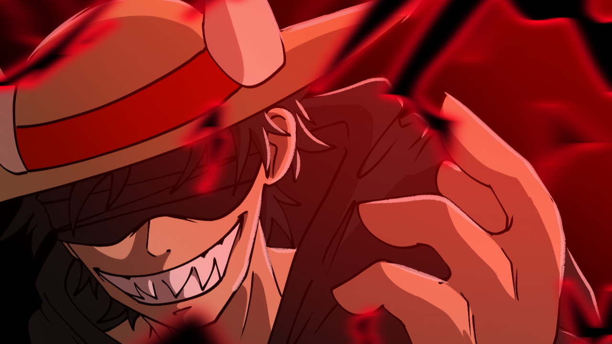

Videos WarsNut0
Les videos officielles pour suivre le contenu.
Cette page garde le lien verifie de la chaine. C'est le meilleur endroit pour eviter les faux comptes et retrouver rapidement l'ecosysteme WarsNuto.

Videos officielles @WarsNut0 youtube.com/@WarsNut0Dernieres videos
Les nouvelles publications de @WarsNut0.
Cette section se met a jour automatiquement depuis le flux RSS officiel de la chaine YouTube.
Role de la chaine
Un repere public pour la communaute.
Contenu
La chaine centralise les videos et moments importants lies a WarsNuto.
Orientation
Les visiteurs peuvent ensuite rejoindre le Discord officiel sans chercher ailleurs.
Securite
Le site sert de page de verification pour differencier les vrais liens des copies.